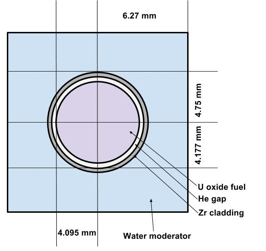
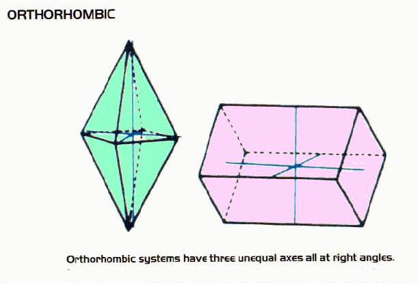
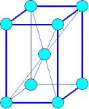
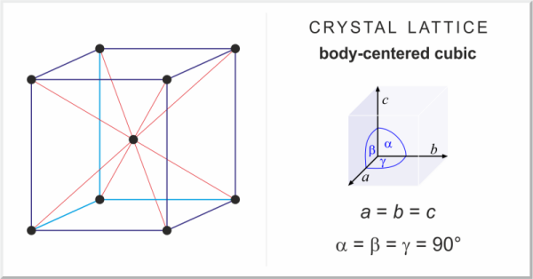
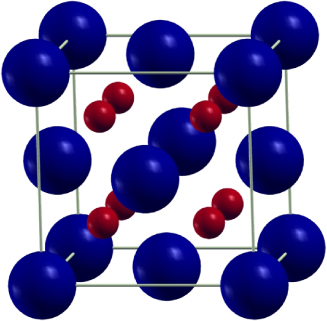
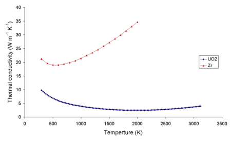
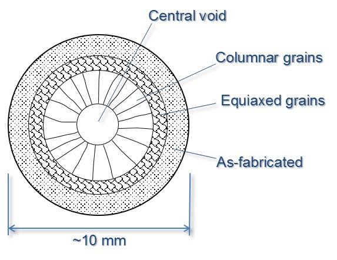
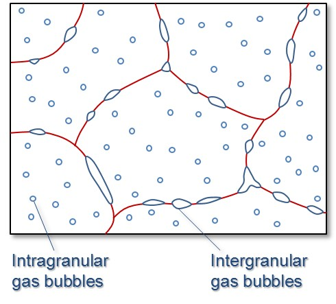

class: center, middle # NE585 ## NUCLEAR FUEL CYCLE ANALYSIS ### Reactor fuel design and fabrication #### 4 --- # Outcomes for the lecture Chapter 4 Design different fuel concepts Assess fule performance Analyze fuel cost as a component in the fuel cycle --- # What's the advantage of nuclear Construction costs are really high Hopefully modularization will help reduce that The real advantage is the high capacity factor [Fossil fuel sources](https://www.eia.gov/electricity/monthly/epm_table_grapher.php?t=epmt_6_07_a) [Non fossil fuel sources](https://www.eia.gov/electricity/monthly/epm_table_grapher.php?t=epmt_6_07_b) --- # Defense in depth used for fuel design  In LWRs Fuel matrix for structural integrity Material that won't melt Technically not really if LFTR Cladding to protect fuel from coolant Can't melt either Must contain fuel and prevent fission product release in the event of fuel failure We can talk about fuel for different reactors though --- # Materials are the strongest design constraint One reason why NuScale is so far ahead is because the fuel is the same Other factors are reactivity heat transfer structural containment no neutron absorbers --- # Fuel has to be cost effective Long residency in the core Standard design for ready production (use in a lot of reactors) Reliability - transients [Quality control](https://www.nrc.gov/reactors/new-reactors/oversight/quality-assurance.html) Technology-neutral --- # Uranium fuel used as metal first Zircaloy clad [Any guesses where?](https://courses.candelalearning.com/x84x9/chapter/fuel-cycle-analysis/) $UF_4+2Mg \rightarrow 2MgF_2+U$ We can also get it from electrorefining Uranium metal has three allotropes --- # $\alpha$ phase is stable up to 600C  Anisotropic When heated, expands in two different directions and contracts in a third Crystal structure highly asymmetrical Only Mo and Nb form solid solutions Do we know anyone working with U-Mo? --- # $\beta$ phase is stable between 660C to 700C  Also anisotropic Both phases orient in preferred direction when metal is deformed Brittle and hard --- # $\gamma$ phase is stable from 760C to 1130C  This is isotropic Is this better to use? Irradiation adversely affects thermal conductivity How? --- # Commercial fuel in LWRs is $UO_2$ ceramic  [Why?](http://www.pbs.org/program/rickover-birth-nuclear-power/) Crystallizes in fluorite structure Face centered cubic lattice Oxygen in tetrahedral sites [Phase diagram](http://www.stonybrook.edu/commcms/geosciences/people/faculty/parise/Parise%20Website%201.png) --- # $UO_2$ is used because oxygen has low neutron capture Structurally very stable Coolant is a harsh environment Fission products stay trapped in the matrix But that causes expansion of the fuel High melting point $2865^o C$ --- class: center, middle # What's the down side though? --- # Uranium oxide fuel isn't actually that great on heat transfer Low thermal conductivity [](https://en.wikipedia.org/wiki/Nuclear_fuel#/media/File:ZrUthermalcond.png) 10 - 5 W/m/K Surprisingly hard to find comparative data [Figure 11](https://neup.inl.gov/SiteAssets/Final%20%20Reports/NEUP-Project-09-773-Final-Report.pdf) High temperatures cause high thermal gradients How is heat transferred to the coolant? --- # High temperatures cause grain growth  Crystal lattice increase at high temperatures But the fuel is constrained in the cladding High temperatures disordered boundaries means that vacancies can diffuse rapidly Leading to rapid creep Which leads to what? Boundaries have high energy Nucleation - fission products --- # Thermal gradients cause pellets to look like hourglass  Thermal stress can cause cracking Voids form with fission gas Migrate to grain boundaries Fission gas can still be contained by the cladding --- # Linear heat rate decreases with burnup Less thermal expansion with irradation Reduces the heat transfer with increasing core life of fuel Couldn't find a graph for this though --- # Fuel also grows with burnup Actual growth due to anisotropy of crystal Swelling from grain boundaries and FP gas formation Pellet density decreases due to void formation Neutrons knock atoms out of the lattice creating interstitials Percent change in volume up to 0.7% How does this affect fuel performance? Other U ceramic fuels if there's time --- # Fuel cladding serves many functions Protects fuel from corrosion Contains fission products Facilitates heat transfer --- class: middle, center # What are cladding design requirements? --- # Stainless steel first used But that was for fast reactors Absorption cross section is too high in thermal region Zr and Be are the only metals with melting points about 1000C Why not Be then? Zr is always stuck with hafnium which has high neutron absorption So more chemical processing to remove the hafnium Zircaloy was developed for cladding ($1850^o C$ melting point) Contains other elements Sn, Fe, Cr, Ni --- # SiC melts at $2730^o C$ Robust in molten salts up to $800^o C$ Lower neutron absorption Greater resistance to radiation damage Problematic in terms of mechanical strength It seems to me like we are too locked in to LWR paradigms --- # Burnable poisons are for reactivity control and fuel utilization Fresh core is loaded with excess reactivity Overcome burned fuel, fission product neutron absorbers, negative temperature feedback Always need excess reactivity to in order to increase reactor power How will this affect load following for SMRs? --- # Boron is one of the most common burnable poisons $B_4C$ is a common compound Gadolinium and erbium are used too as oxides Pyrex like my measuring cups are also used Borosilicate glass enclosed in steel tubes Can be inserted into existing guide tube locations in the assemblies Wet burnable absorber uses $Al_2O_3-B_4C$ encased in Zircaloy tube Coolant flows through Also installed in guide tubes --- # Integral fuel absorber applies a coating on pellets Uses $ZrB_2$ The idea is that this absorber does not displace coolant and reduce fission But boron produces He in the fuel rod, so I don't see how that doesn't affect structure It seems like they build in a gap for the He to form --- # Gadolinium pellets can be used in the fuel rods $Gd_2O_3-UO_2$ with natural uranium These are made into rods and inserted into assemblies Does this seem like a weird way to design the reactor? --- # To make fuel, first convert $UF_6$ to $UO_2$ Enriched $UF_6$ is delivered as a solid Heated so that it sublimates Reacted with water as: $UF_6+2H_2O \rightarrow UO_2F_2+4HF$ in solution Mixed with ammonia: $2UO_2F_2+6NH_4OH \rightarrow (NH_4)_2U_2O_7+3H_2O$ Calcined with air with to produce $U_3O_8$ Reduced with hydrogen to obtain $UO_2$ powder This is basically the same process from last time Pressed into pellets and sintered (24 h) --- class: middle, center  --- # Pellets then loaded into rods Backfilled with helium Where do we get the helium? Welded shut PWR pressurized to 2000 psi; BWR 1000 psi Etched in nitric hydrofluoric acid Autoclaved with high pressure steam to develop corrosion resistant film ---